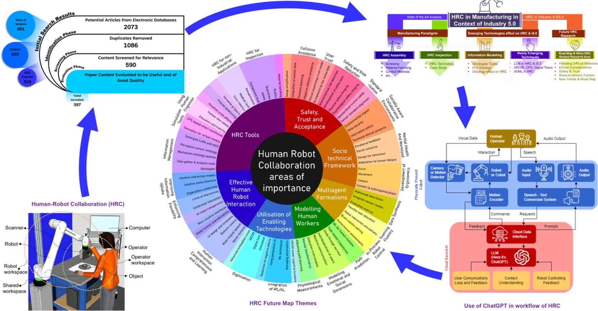

The Need for Interdisciplinary Collaboration in Robotics
Robotics is one of the most rapidly advancing fields, and it is becoming clear that no single discipline can address the complexities of building intelligent, autonomous systems. The integration of multiple domains, including Computer Science, Mechanical Engineering, Electrical Engineering, and Mechatronics, is critical for the creation of robust and innovative robotic solutions.
"Robotics is where ideas from various disciplines converge, and when engineers from different backgrounds collaborate, the boundaries of what is possible are pushed even further."
Computer Science plays a pivotal role in robotics, providing the foundation for software development, algorithms, machine learning, and AI integration. Meanwhile, Mechanical Engineering is essential for designing the physical structure and motion of robots, ensuring durability and efficiency. Electrical Engineering ensures power management, circuitry, and sensor integration, while Mechatronics blends the mechanics, electronics, and computing systems into a cohesive unit.
The complexity of modern robotic systems requires a blend of knowledge from all these fields, which is why interdisciplinary collaboration is more important than ever. Engineers from diverse fields bring unique perspectives that foster creativity and innovation, leading to the development of more capable and efficient robots.